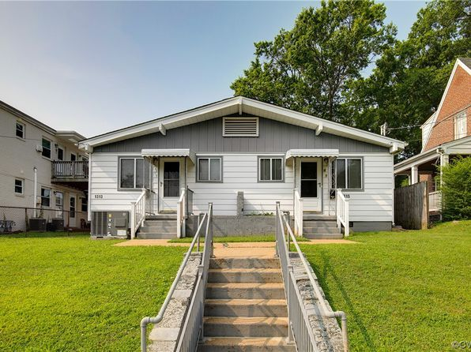

3 Things to keep in mind
3.1 Why does by-right housing development matter?
The public approval process can be helpful to ensure that a development does not have negative impact on the existing community, but it can also stifle housing supply and affordability. Public hearings for housing developments can be subject to influence from Not-in-My-Backyard (NIMBY) opposition. Often the loudest voices at public meetings, NIMBYs can put a stop to projects even if they align with local comprehensive plans and housing needs.
It’s estimated that NIMBY opposition “adds an average of 5.6 percent to total development costs and delays the delivery of new housing by an average of 7.4 months.”1
The financial cost and risk associated with the public approval process can be costly and those costs ultimately translate to less affordability. Worse yet, a developer can spend significant amounts of money and not still not have a development be approved. One developer we talked to estimated that a 100 unit Low-Income Housing Tax Credit rezoning could cost the following:
| Cost | Total | Per Unit |
|---|---|---|
| Required designs for rezoning submittal | $50,000 | $500 |
| Company overhead associated with rezoning process | $30,000 | $300 |
| Legal fees associated with rezoning process | $50,000 | $500 |
| TOTAL COST OF REZONING | $130,000 | $1,300 |
These costs can range depending on the requirements of the jurisdiction. As the need for more housing continues, especially rental housing, delays of more housing can not only cost developers, but also residents.
By allowing for more by-right development of diverse housing types, jurisdictions can help eliminate risk and reduce costs, which can translate to more abundant housing options when it is needed the most.
Visit our Zoning 101 Toolkit to learn more about the impacts of zoning on housing affordability.
3.2 Getting ahead of questions and concerns
As you view the Virginia Zoning Atlas and the analyses that follow the completion of each region, you may have critiques or concerns about what is presented. Rest assured that there is a reason we did what we did and we have already thought about addressing your critique or concern in a future iteration of the atlas.
Below, we try to address some of these critiques or concerns early. Please address other comments and concerns to eric@housingforwardva.org.
3.2.1 Why our definition may not align with yours
To standardize complex zoning ordinances, not only across Virginia but the entire nation, requires a rigorous adherence to common definitions and interpretations. The methodology developed by National Zoning Atlas team requires a specific reading of zoning ordinances that may not coincide with your or even a locality’s interpretation of their zoning ordinance.
3.2.1.1 1-Family Treatment
Based on the methodology, “1-family housing means a building, including a mobile home or a manufactured home, with only one dwelling unit. 1-family zoning permits one such building on each lot.”
This includes duplex, townhouse, or rowhouse development where each unit sits on an individual lot. For some localities, this type of development may be interpreted as 2+-Family housing, but to adhere to the definitions set out in the methodology, they are 1-Family.
HFV is collecting additional information in our analysis to determine whether a zoning district allows for only single-family detached housing.
3.2.1.2 2-Family Treatment

So what’s a 2-Family Treatment then? What is typically referred to as a duplex, two-family, or semi-detached housing is only 2-Family Treatment if both units sit on the same lot. Think of a building that has one dwelling on the ground floor and then another on the second. Sometimes they can be side-by-side. The distinction more often manifests itself in how the units are ultimately occupied (i.e. are they for sale or are they rented?). In most cases, 2-Family Treatments are rentals or condominiums.
3.2.1.3 3-Family Treatment
Most localities across Virginia define any building containing three or more units as multifamily. A few do make the distinction between smaller type of multifamily buildings like triplexs or fourplexes, but lumping 2-family, 3-family, and 4+-family together as multifamily would ignore the nuances that may exist between localities.
3.2.1.4 Accessory Dwelling Units
Localities are increasingly seeing interest among residents for accessory dwelling units (ADUs) to increase their income, house a family member with special needs, or make their home more functional. This has led many localities to specifically define an ADU in their ordinance, often associated only with a single-family detached home.
The methodology does not only include these types of accessory dwelling units, but also dwelling units that are accessory to nonresidential uses. Some localities permit housing as an accessory to industrial, commercial, or retail uses. Consider a caretaker’s dwelling associated with a cemetery, or a single unit of housing above a retail store in a historic downtown. Both of these are accessory uses to a principal use, and legally speaking, ADUs!
3.2.1.5 Manufactured Homes
Manufactured homes are an important source of affordable housing throughout the Commonwealth. As mentioned above, they are treated as 1-Family Treatment (even when they exist within a manufactured home park or community, where households rent the lot their home sits on).
HFV plans to expand later capture the nuances of manufactured home zoning in a future iteration of the zoning atlas work.
3.2.2 “Why is the zoning atlas missing [x]?”
The information that is presented in the zoning atlas is based on data that was accessible to Virginia Zoning Atlas analysts. We tried our best to get the most up-to-date zoning maps and ordinances from local staff. Some localities did not have certain overlay districts mapped and sometimes had districts that are described in their ordinance but not mapped.
Individual parcels within a zoning district may be zoned differently than what the district allows for because the owner went through the approval process to rezone the property. If this information is not captured by the jurisdiction’s zoning geospatial data, then it was not mapped.
3.2.3 Other factors impact development

We fully acknowledge that other physical, regulatory, and political factors impact what can be built and where. Zoning regulations are just a piece of the puzzle (although a large one!) under local control.
- Preserving the natural resources of Virginia is important to environmental sustainability and our vitality. Developable land calculations in later sections do not currently account for conservation easements.
- Sea-level rise along Coastal Virginia are an increasing cause for concern and further development along certain coastal areas is not encouraged by many localities.
- Public water and sewer service areas are critical to support denser development. Including these areas as an additional layer in the zoning atlas would provide important context.
- Building codes also impact development.
- Public input through the comprehensive planning process guides what type of development residents want to see in their community. But it is important that residents understand the implications of their choices in terms of affordability, economic development, and community livability.
3.2.4 What about [x] or [y]?!
We’ve had several comments or questions about wishes for the zoning atlas to show specific things. Our adherence to the current zoning atlas methodology is important for standardization purposes, but also to streamline this work. We hope that the completion of the Virginia Zoning Atlas as it is currently designed will act a proof of concept to Virginians to further garner support for this work.
There are numerous questions that we, as well as you, have about zoning in Virginia. We want to expand upon the Virginia Zoning Atlas in future iterations and maintain it as a free resource.
But this takes time, as well as funding. With additional funding, we can expand and maintain the Virginia Zoning Atlas to ask additional questions, like:
- How restrictive is zoning for group homes or shelters?
- How restrictive is zoning for manufactured homes?
- Do current lot requirements match the actual physical dimension of lots?
Donating to support the Virginia Zoning Atlas here can help us address these other important questions!
National Multifamily Housing Council & National Association of Home Builders. (2022). Cost of Regulations Report. https://www.nmhc.org/research-insight/research-report/nmhc-nahb-cost-of-regulations-report/↩︎